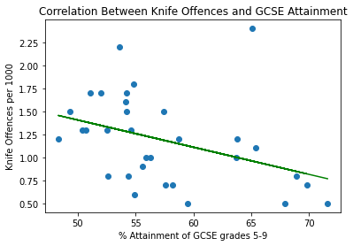

The first chart shows greenhouse gas emissions by food production.
My second chart looks at UK bank rates from 1975-2020
This chart looks at IMF lending
This chart looks at IMF lending, this time as a percentage of world GDP
According to this data, 1984 is the riskiest year, as IMF lending reached its highest as a percentage of global GDP
The second graph uses a line chart to better display the variations in yield over time
This chart shows the top 20 football players with the highest number of assists in Premier League history. The data scraping can be found on my Colab.
The first map is a base map of South America, with borders of countries
The second map is a chloropleth map, showing the crime index of South American countries. Venezuela ranked highest, and Paraguay lowest.
I will be analysing the claim that rates of CO2 emissions are linked to GDP.
The first chart shows a strong positive correlation between GDP per capita and CO2 emissions up until GDP per capita reaches around $13,000, supporting the claim. However, the trend after this becomes far less clear, with no real trend in the range of $15,000-$25,000, after which the trend appears to become negative.
The second chart shows UK CO2 emissions divided by GDP per capita across time. The chart helps illustrate the changing relationship between emissions and GDP per capita highlighting that, since the 1930's, GDP per capita has continued to increase whilst emissions have decreased.
My hypothesis is that higher attainment of GCSE grades in London boroughs will results in lower rates of knife offences. The regression produced a negative correlation of 0.15. I correctly hypothesised the direction of the effect, however an R squared value of 0.15 is fairly insignificant. Here is my Colab for the Supervised learning analysis.
